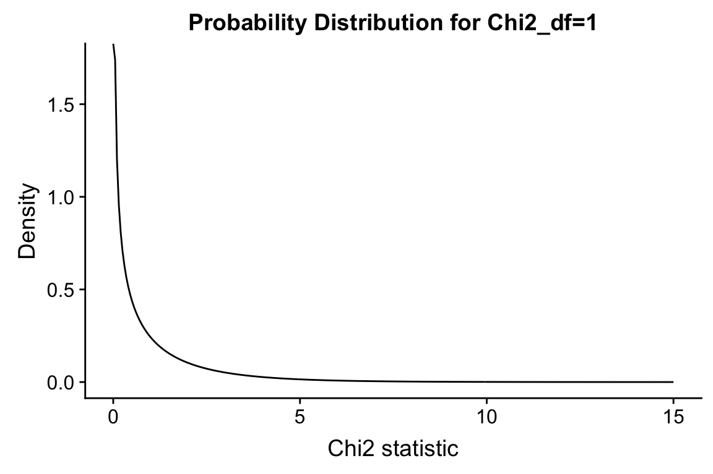

Chapter 16 Introduction to hypothesis testing
In hypothesis testing we compare statistical properties of our observed data to the same properties we would expect to see under a null hypothesis.
More specifically we compare our point estimate of a statistic of interest, based on our data, to the sampling distribution of that statistic under a given null hypothesis.
16.1 Libraries
16.2 Null and Alternative Hypotheses
When carrying out statistical hypothesis testing we must formulate a “null hypothesis” and an “alternative hypothesis” (these always come as a pair) that jointly describe the set of possible values for a statistic of interest. We must also make some assumptions, either based on theory or inferred from the data, about the distributional properties of the sampling distribution of the statistic of interest.
NOTE: statistical hypotheses are not scientific hypotheses, but rather statistical statements about a population. Statistical hypotheses can help us to determine which predictions stemming from scientific hypotheses are consistent with the data, but statistical hypotheses are not “statements about the existence and possible causes of natural phenomena” (Whitlock & Schluter 2014).
16.2.1 Null hypotheses
Whitlock & Schuluter: “A null hypothesis is a specific statement about a population parameter made for the purpose of argument. A good null hypothesis is a statement that would be interesting to reject.”
- Null hypotheses typically correspond to outcomes that would suggest “no difference” or “no effect” of the treatment, grouping, or other types of comparisons one makes with data
- Sometimes a null expectation is based on prior observation or from theoretical considerations
- A null hypothesis is always specific – specifies on particular value of the parameter being studied (though sometimes this is implicit when written in words)
- The standard mathematical notation to indicate a null hypothesis is to write \(H_0\) (“H-zero” or “H-naught”)
Examples of null hypotheses:
- \(H_0\): The density of dolphins is the same in areas with and without drift-net fishing
- \(H_0\) :The effect of ACE inhibitors on blood pressure does not differ from administering a placebo
- \(H_0\): There is no correlation between maternal smoking and the probability of premature births
16.2.2 Alternative hypotheses
Whitlock & Schluter: “The alternative hypothesis includes all other feasible values for the population parameter besides the value stated in the null hypothesis”
- Alternative hypotheses usually include parameter values that are predicted by a scientific hypothesis, but often include other feasible values as well
- The standard mathematical notation to indicate a null hypothesis is to write \(H_A\)
Examples of alternative hypotheses:
- \(H_A\): The density of dolphins differs in areas with and without drift-net fishing
- \(H_A\) :The effect of ACE inhibitors on blood pressure differs from administration of a placebo
- \(H_A\): There is a non-zero correlation between maternal smoking and the probability of premature births
16.3 Rejecting / failing to reject null hypotheses
When carrying out statistical hypothesis testing the null hypothesis is the only statement being tested with the data.
If the data are consistent with the null hypothesis, we have “failed to reject the null hypothesis”. This is not the same as accepting the null hypothesis.
If the data are inconsistent with the null hypothesis, we “reject the null hypothesis” and say the data support the alternative hypothesis
Note that because the alternative hypothesis is usually formulated in terms of all other possible values of a parameter of interest, rejecting the null hypothesis does not allow us to make a probabilistic statement about the value of that parameter.
16.4 Outcomes of hypothesis tests
In reality, a null hypothesis is either true or false. When you carry out a hypothesis test, there are two possible test outcomes – you reject the null hypothesis or you fail to reject the null hypothesis. It is typical to represent the different combinations of the reality / statistical tests in a table like the following:
| do not reject \(H_0\) | reject \(H_0\) | |
|---|---|---|
| \(H_0\) true | okay | Type 1 error (false positive), \(\alpha\) |
| \(H_A\) true | Type 2 error (false negative), \(\beta\) | okay |
When we specify a significance threshold, \(\alpha\), for hypothesis testing, this controls the false positive rate (also called Type I error) of our test. The false negative rate (also calledType II error) is often referred to as \(\beta\). In general, there is a tradeoff between the false positive and false negative rate – the lower the false positive rate the higher the false negative rate, and vice versa.
16.5 Using p-values to assess the strength of evidence against the null hypothesis
To assess the strength of the evidence against the null hypothesis, we can ask “what is the probability of observing a statistic of interest that is at least as favorable to the alternative hypothesis, if the null hypothesis were true?”
Mathematically, we pose this question with respect to the expected sampling distribution of the statistic of interest under the null hypothesis (this is called the null distribution). For example, when testing a hypothesis involving means, we would ask “What is the probability of observing my sample mean, with respect to the expected distribution of sample means, if the null hypothesis was true.”
- P-value
- The p-value is the probability of observing data at least as favorable to the alternative hypothesis as our current data set, if the null hypothesis is true.
Small p-values give us evidence to support the rejection of the null hypothesis. Conventionally p-values of less than 0.05 or 0.01 are used in many scientific fields, though recently there have been calls in some fields to redefine this convention (see for example Benjamin et al. 2017, https://www.nature.com/articles/s41562-017-0189-z.pdf).
16.6 Example: Comparing a sample mean to an hypothesized normal distribution
Occasionally one wishes to ask whether a sample mean, from a sample of size \(n\), is consistent with having been drawn from a normal distribution with a specified mean and standard deviation, \(N(\mu,\sigma)\).
16.6.1 Null and alternative hypotheses
- \(H_0\): the sample mean, \(\overline{x}\) is from a normal distribution with a mean \(\mu\) and standard deviation \(\sigma\)
- \(H_A\): the sample mean is not from such a distribution
16.6.2 Sampling distribution of the mean
For a normal distribution with parameters, \(N(\mu,\sigma)\), the sampling distribution of the mean is itself normally distributed, with parameters \(N(\mu,\sigma/\sqrt{n})\).
A reminder that the standard deviation of the sampling distribution of the mean, $/, is usually referred to as the “standard error of the mean”
16.6.3 Calculating a p-value
Since the sampling distribution of the mean is normally distributed, as described above we can use the pnorm() function to
Let’s apply this to the comparison we made in last class, involving a comparison of the sample mean of tail length in Victoria possums to a hypothesized normal distribution based on Queensland possum. In that example, our hypothesized normal distribution had parameters \(N(37.9\ \text{cm}, 1.71\ \text{cm})\). Our Victoria possum sample size was \(n=5\), with a mean \(x = 35.9\ \text{cm}\).
Our null hypothesis is framed in a manner that requires a two-tailed test, as under the alternative hypothesis the sample could be drawn from a distribution with either a higher or lower mean.
# parameters of null
null.mu <- 37.9
null.sigma <- 1.71
# sample statistics
observed.mean <- 35.9
n <- 5
diff.mean <- abs(null.mu - observed.mean)
# standard deviation of sampling distribution under null hypotheses
null.SE.mean <- null.sigma/sqrt(n)
# calculate p-value
p.value <-
pnorm(null.mu - diff.mean, null.mu, null.SE.mean, lower.tail = TRUE) +
pnorm(null.mu + diff.mean, null.mu, null.SE.mean, lower.tail = FALSE)
p.value
#> [1] 0.008915324The p-value given above should be very close to the estimate you generated via simulation in the previous assignment.
16.7 Example: Handedness of toads
From Whitlock & Schluter:
Most humans are right handed. Do animals besides human exhibit biased handedness? Bisazza et al. (1996) tested the possiblity of biased handedness in European toads, Bufo bufo. They sampled 18 toads and used a behavioral assay to determine the preferred hand each individual frog used to perform a task.
16.7.1 Null and alternative hypotheses
- \(H_0\): toads do not exhibit any bias towards right or left handedness, i.e. p(right handed) = 0.5
- \(H_A\): right and left handedness are not equally frequent in the population, i.e. p(right haned) \(\neq\) 0.5
16.7.2 Data
Of the 18 toads tested, 14 were right-handed and 4 were left handed. Therefore, the observed proportion of right-handed toads was 0.778
16.7.3 Sampling distribution for proportions: Binomial distribution
To assess how likely it would be to observe the proportion 0.778 of right-handed toads, if the null hypothesis of equal probability of right- and left-handed toads was true, we need to know the appropriate sampling distribution.
Here we’re dealing with binary outcomes for each outcome – each frog is either right or left handed. For data with binary outcomes we can arbitrary call one outcome a “success”. If we assume that there is a fixed probability of getting a success, and each observation is independent, than the binomial distribution provides the probability distribution for the number of “successes” in a given number of trails (observations).
Let’s call the outcome “right-handed” the successful outcome and let’s generate the expected counts of successes under the null hypothesis (i.e. p(right handed) = 0.5). As we saw in a previous lecture, we can use dbinom() function, which is the probability mass function for the binomial distribution. Given a vector of outcome of interest, the number of trails, and the probability of a success, dbinom calculates the probability of each outcome.
possible.outcomes <- seq(0, 18)
H0.prob = 0.5
prob.distn <- dbinom(x = possible.outcomes, size = 18, prob = H0.prob)
null.df <- data.frame(outcomes = possible.outcomes, probs = prob.distn)
ggplot(null.df) +
geom_col(aes(x = outcomes, y = probs), width=0.25) +
scale_x_continuous(breaks = possible.outcomes) +
labs(x = "# of right-handed toads", y = "probability",
title = "The null distribution for the observed number of right handed toads\nBinomial distribution, p = 0.5, n = 18")
16.7.4 Calculating a p-value for the binomial test
Our alternative hypothesis was stated as “right and left handedness are not equally frequent in the population”. This reflects the fact that we did not have a strong a priori prediction about the direction of a potential bias in handedness among toads.
Recall that a p-value represents the probability of observing the parameter of interest (counts in this case) at least as extreme as that in our data, under the null distribution. There are two ways to deviate from the null hypothesis – observing more right-handed toads than we expect OR observing fewer right-handed toads than we expect. To calculate an appropriate p-value in this case we must consider deviations in both directions. This is what we call a two-tailed test because we must consider both tails of the sampling distribution.
In the present case, we need to add up the probability of observing 14 or more right-handed toads (right tail of the null distribution) and the probability of observing 4 or fewer right-handed toads (left tail of the null distribution).
left.tail <- filter(null.df, outcomes <= 4) %$% probs %>% sum
right.tail <- filter(null.df, outcomes >= 14) %$% probs %>% sum
p.value <- left.tail + right.tail
p.value
#> [1] 0.03088379Our calculated p-value is approximately 0.031. If we the conventional significance threshold of \(\alpha = 0.05\), our conclusion would be “we reject the null hypothesis of equal probability of right- and left-handed toads”.
16.7.5 The binom.test() function
The previous calculations can be conveniently carried out using the R function binom.test(). The arguments to binom.test() are the number of successes (x), the number of trials (n), and the hypothesized probability of success (p).
b.test <- binom.test(4, 18, p=0.5, alternative="two.sided")
b.test
#>
#> Exact binomial test
#>
#> data: 4 and 18
#> number of successes = 4, number of trials = 18, p-value = 0.03088
#> alternative hypothesis: true probability of success is not equal to 0.5
#> 95 percent confidence interval:
#> 0.06409205 0.47637277
#> sample estimates:
#> probability of success
#> 0.2222222As shown above, display the results of binom.test() provides a simple written summary. You can retrieve specific values using named fields (see the documentation fo the full list):
16.8 Example: Measuring the association between maternal smoking and premature births
We’ve previously explored the NC Births data set which includes information on mothers age, smoking status, weight gained, birth weight, premature status, etc. We’ll use this data to explore the relationship between maternal smoking and premature births:
births <- read_tsv("https://raw.githubusercontent.com/Bio204-class/bio204-datasets/master/births.txt")
#> Parsed with column specification:
#> cols(
#> fAge = col_integer(),
#> mAge = col_integer(),
#> weeks = col_integer(),
#> premature = col_character(),
#> visits = col_integer(),
#> gained = col_integer(),
#> weight = col_double(),
#> sexBaby = col_character(),
#> smoke = col_character()
#> )
xtabs(~premature + smoke, births)
#> smoke
#> premature nonsmoker smoker
#> full term 87 42
#> premie 13 816.8.1 Null and alternative hypotheses:
- \(H_0\): there is no association between maternal smoking and premature birth
- \(H_A\): there is an association between maternal smoking and premature birth
16.8.2 Contingency table analysis using the \(\chi^2\) statistic
In our class session on contingency analysis we introduced the \(\chi^2\) statistic as a measure of association between categorical variables (see previous notes.
Giving a contingency table of observed counts, we can calculate the expected counts under independence of the variables. Based on the observed and expected counts, the \(\chi^2\) (chi-squared) statistic is defined as:
where \(m\) and \(n\) are the number of categories of the two variables under consideration. The larger the \(\chi^2\)-statistic the stronger the evidence that the categorical variables are not independent.
16.8.3 \(\chi^2\)-distribution
This sampling distribution of the \(\chi^2\)-statistic when the rows and columns variables of a contingency table are indepdent is the \(\chi^2\)-distribution. The shape of the \(\chi^2\)-distribution depends on a parameter called the “degrees of freedom” (abbreviated df). For contingency table analysis, the degrees of freedom is: \(df = (m - 1)(n - 1)\) where \(m\) and \(n\) are the number of rows and columns of the table.
Here is the \(\chi^2\)-distribution with df = 1:
chi2.values <- seq(0, 15, by = 0.05)
chi2.density <- dchisq(chi2.values, df = 1)
chi2.df <- data.frame(chi2 = chi2.values, density = chi2.density)
ggplot(chi2.df, aes(chi2, density)) +
geom_line() +
labs(x = "Chi2 statistic", y = "Density",
title = "Probability Distribution for Chi2_df=1")
For \(\chi^2\) analysis of contigency tables, hypothesis tests are always one-tailed. That is, in contigency analysis were are always asking “what is the probability of observing a \(\chi^2\) statistic at least this large under the null hypothesis of no association?”
16.8.4 Carrying out a hypothesis test using the \(\chi^2\)
Under the null distribution, the sampling distribution of the \(\chi^2\) statistic is given by the \(\chi^2\) distribution with df = 1. We use the built-in chisq.test function to calculate the \(\chi^2\) value for the observed data and to calculate a corresponding p-value.
chi2.births <- chisq.test(births$premature, births$smoke, correct = FALSE)
chi2.results <- glance(chi2.births)
chi2.results16.8.5 Interpretation of the \(\chi^2\)-test
Our point estimate of the \(\chi^2\) statistic for the births data is 0.2491694 and the associated p-value is 0.6176605. Given this, we say we “fail to reject the null hypothesis of no difference the rate of premature births between smoking and non-smoking mothers”.
For further insight into why the \(\chi^2\) statistic is small in this case, compare the observed and expected counts. As you’ll see, the values are barely differnt:
chi2.births$observed
#> births$smoke
#> births$premature nonsmoker smoker
#> full term 87 42
#> premie 13 8
chi2.births$expected
#> births$smoke
#> births$premature nonsmoker smoker
#> full term 86 43
#> premie 14 7As mentioned previously, failing to reject a null hypothesis is not the same as accepting the null hypothesis. When it comes to human health and disease and environmental exposures, the magnitude of effects is often very small and you often need thousands of samples to detect an effect. For example, a relationship between maternal smoking and premature births is well supported by multiple large studies. However, the sample we’re using in this case is rather modest (150 births) and hence not well powered to detect modest effects. We’ll discuss this further when we talk about the topic of statistical power.